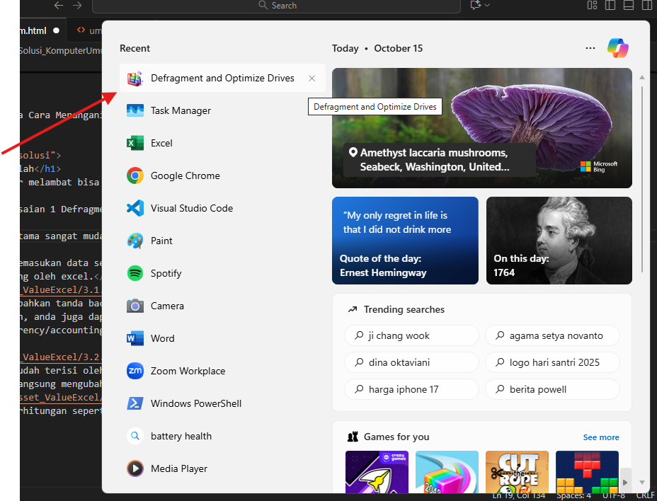
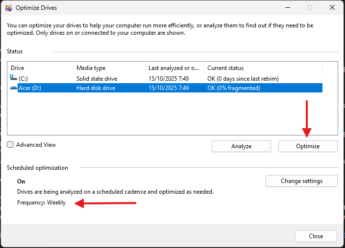
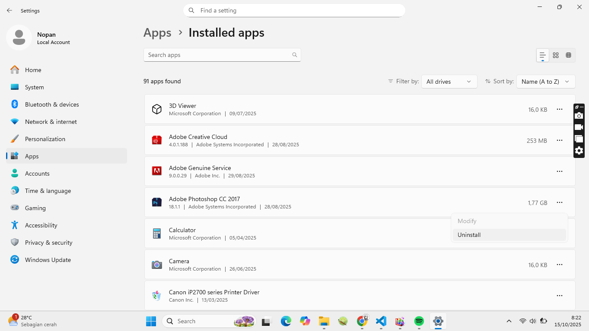
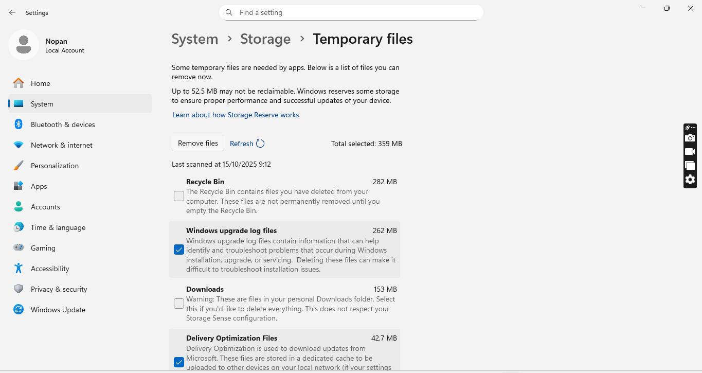

Penjelasan Masalah
Performa komputer melambat bisa karena beberapa faktor, seperti virus, memori penuh, dan perangkat keras yang bermasalah.
Langkah Penyelesaian 1 Defragment Disk
- Langkah pertama sangat mudah yaitu dengan proses Defragment disk, yaitu search di kolom pencarian dan cari Defragment buka defragment and optimize drive. 
- Pada schedule optimization pastikan sudah on, anda juga bisa mengubah seberapa sering defragment dilakukan idealnya dilakukan setiap minggu.
- Anda juga bisa melakukan defragment secara manual dengan memilih optimize. 
Langkah Penyelesaian 2 Uninstal Aplikasi Tidak Penting
- Langkahnya buka setting, cari apps, kemudian installed apps, fillter by all drive, maka akan muncul semua Aplikasi yang terinstal pada komputer, anda bisa memilih aplikasi yang tidak digunakan, pilih titik 3, kmeudia tekan uninstall. 
- Untuk pembersihan lebih lanjut pada menu setting, pilih system, kemudian storage, pastikan sudah disk c, pilih temporary file kemudian remove. 
- Langka-langkah diatas berfungsi memberishkan sampah/aplikasi tak berfungsi untuk menunjang performa penyimpanan pada komputer.
Langkah Penyelesaian 3 Menghilangkan Animasi Komputer
Langkah Penyelesaian 4 Upgrade ke SSD
- Langkah terakhir namun yang paling pasti adalah beralih dari HDD ke SSD.